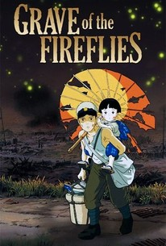

Ghibli bukan nama dari judul animasi atau genre animasi. Namun, Ghibli adalah sebuah studio film animasi yang berbasis di Koganei, Tokyo, Jepang. Animasi yang diproduksi oleh studio ini mengangkat unsur yang imajinatif, emosional, provokatif, dan tentunya telah mendapatkan banyak pujian yang luas di seluruh dunia. Walaupun berbasis di Jepang, nama "Ghibli" sebenarnya bukan berasal dari bahasa Jepang, melainkan bahasa Italia. Nama studio ini merupakan nama panggilan yang digunakan oleh orang Italia pada pesawat-pesawat pengincar Sahara di masa Perang Dunia II. Berdasarkan teorinya, pemilihan nama studio ini diharapkan meniupkan angin yang baru terhadap industri anime. Studio animasi ini pertama kali berdiri di tahun 1985, dan dipimpin oleh sutradara ternama Hayao Miyazaki bersama dengan rekan yang juga pembimbingnya, seperti Isao Takahata.
Sebelum benar-benar resmi didirikan studio animasi ini sudah memproduksi sebuah film, berjudul Nausicaä of the Valley of the Wind (Kaze no tani no Naushika) tahun 1984. Film ini diadaptasi dari manga bersambung yang diterbitkan majalah Tokuma Shoten. Ini adalah perusahaan induk dari studio ghibli yang telah memberikan hak-hak beberapa video garapan studio Ghibli pada Disney di tahun 1997 dan 2001. Karya imajinatif dan penuh emosional yang diproduksi membuat studio animasi ini mendapatkan banyak penghargaan. Bukan hanya diminati oleh masyarakat Jepang, animasi yang diproduksi bahkan laku di mancanegara. Pada tanggal 1 Oktober 2001, didirikanlah Museum Ghibli, yang menjadi salah satu destinasi wisata Jepang yang paling banyak dikunjungi.
Deretan Film Ghibli Terbaik
1. Grave of the Fireflies

Grave of the Fireflies (Jepang: 火垂るの墓, Hepburn: Hotaru no Haka) adalah sebuah film tragedi perang animasi Jepang tahun 1988 yang berdasarkan pada cerpen semi-autobiografi bernama sama tahun 1967 karya Akiyuki Nosaka. Film tersebut ditulis dan disutradarai oleh Isao Takahata, dan dianimasikan oleh Studio Ghibli untuk penerbit cerita tersebut Shinchosha Publishing. Film tersebut menampilkan Tsutomu Tatsumi, Ayano Shiraishi, Yoshiko Shinohara dan Akemi Yamaguchi. Berlatar belakang Kota Kobe, Jepang, film tersebut mengisahkan cerita dua bersaudara, Seita and Setsuko, dan perjuangan mereka untuk bertahan hidup pada bulan-bulan akhir Perang Dunia Kedua. Grave of the Fireflies meraih sambutan kritis dan menjadi salah satu film perang terbesar sepanjang masa dan telah diakui sebagai karya besar dari animasi Jepang.
Trailer
2. Spirited Away
Spirited Away (千と千尋の神隠し, Sen to Chihiro no Kamikakushi) adalah film fantasi animasi Jepang 2001 yang ditulis dan disutradarai oleh Hayao Miyazaki, dianimasikan oleh Studio Ghibli untuk Tokuma Shoten, Nippon Television Network, Dentsu, Buena Vista Home Entertainment, Tohokushinsha Film, dan Mitsubishi. Pengisi suara film ini antara lain: Rumi Hiiragi, Miyu Irino, Mari Natsuki, Takeshi Naito, Yasuko Sawaguchi, Tsunehiko Kamijō, Takehiko Ono, dan Bunta Sugawara.
Spirited Away bercerita tentang Chihiro Ogino (Hiiragi), seorang gadis 10 tahun yang saat pindah ke lingkungan baru, memasuki dunia Kami (cerita rakyat roh Shinto Jepang).Setelah orang tuanya diubah menjadi babi oleh penyihir Yubaba (Natsuki), Chihiro mengambil pekerjaan di pemandian Yubaba untuk menemukan cara membebaskan dirinya dan orang tuanya, dan kembali ke dunia manusia.
Awalnya dirilis di Jepang pada 20 Juli 2001 oleh distributor Toho, film ini mendapat pengakuan universal,mendapat US$395,8 juta di box office seluruh dunia. Ini sering dianggap sebagai salah satu film terbaik abad ke-21 serta salah satu film animasi terbesar yang pernah dibuat. Oleh karena itu, film ini menjadi film paling sukses dan berpenghasilan tertinggi dalam sejarah Jepang dengan total ¥31,68 miliar ($305 juta). Ini memegang rekor selama 19 tahun sampai dilampaui oleh Demon Slayer: Kimetsu no Yaiba the Movie: Mugen Train pada tahun 2020. Film ini memenangkan penghargaan Oscar pada tahun 2002 dalam kategori Film Animasi Terbaik dan menjadi anime pertama yang meraih penghargaan dalam kategori tersebut. Film ini juga memenangi Penghargaan Beruang Emas pada Pesta Film Internasional Berlin 2002 (bersama Bloody Sunday).
Trailer
3. Howl no Ugoku Shiro
Howl's Moving Castle (Jepang: ハウルの動く城) adalah sebuah film fantasi animasi Jepang tahun 2004 yang ditulis dan disutradarai oleh Hayao Miyazaki. Film ini diadaptasi dari novel dengan judul yang sama karya penulis asal Inggris, Diana Wynne Jones. Film ini diproduksi oleh Toshio Suzuki, dengan animasinya oleh Studio Ghibli dan didistribusikan oleh Toho. Mamoru Hosoda, sutradara dari 1 episode dan 2 film dari serial Digimon, awalnya dipilih sebagai sutradara namun tiba-tiba menolaknya, membuat Miyazaki mengambil peran sutradara.
Howl's Moving Castle ditampilkan perdana di Festival Film Venezia pada 5 September 2004, dan dirilis di bioskop-bioskop Jepang pada 20 November 2004. Howl's Moving Castle menerima omzet 190 juta Dolar AS di Jepang dan 235 juta Dolar AS di seluruh dunia, menjadikannya sebagai salah satu film terlaris dalam sejarah perfilman Jepang. Film ini lalu disulihsuarakan ke bahasa Inggris oleh Pete Docter dari Pixar dan didistribusi di Amerika Utara oleh Walt Disney Pictures. Howl's Moving Castle dirilis secara terbatas di Amerika Serikat dan Kanada pada 10 Juni 2005 dan dirilis di Australia pada 22 September 2005 dan di Britania Raya juga di bulan September. Howl's Moving Castle masuk ke dalam nominasi Academy Award for Best Animated Feature pada Academy Awards ke-78 tahun 2006.
Novel karya Wynne Jones yang diadaptasi memungkinkan Miyazaki untuk mengkombinasikan seorang gadis yang pemberani dan seorang sosok keibuan ke dalam satu karakter utama, Sophie. Sophie diceritakan sebagai seorang pengrajin topi berusia 18 tahun. Ia kemudian dikutuk oleh seorang penyihir yang mengubahnya menjadi nenek tua berumur 90 tahun. Sophie pada awalnya cemas akan perubahan yang dialaminya. Namun, ia mencoba untuk menerimanya sebagai pembebasan dari rasa gugup, takut, dan tidak sadar diri. Perubahan tersebut mungkin merupakan kesempatan bagi sebuah petualangan.
Trailer
4. Ponyo on the Cliff
Ponyo on the Cliff (Jepang: 崖の上のポニョ, Hepburn: Gake no ue no Ponyo) adalah film animasi fantasi karya Hayao Miyazaki yang dirilis oleh Toei Company (Jepang) pada 19 Juli 2009. Film ini merupakan karya Miyazaki setelah film animasi Howl's Moving Castle yang dirilis 4 tahun sebelumnya (2004).
Tokoh utama dalam film ini adalah seekor anak ikan yang ingin menjadi manusia yang bernama Ponyo dan seorang anak laki-laki yang bernama Sousuke. Hayao Miyazaki mengungkap film Ponyo adalah karya yang tidak memiliki sisi kekerasan. Karya yang bernuansa sama dengan tema ini adalah film animasi berjudul Kiki's Delivery Service yang dirilis pada tahun 1989.
Ponyo diadaptasi dari cerita anak-anak The Little Mermaid karya Hans Christian Andersen. Miyazaki tidak mengadaptasi The Little Mermaid sepenuhnya, tetapi dia mengubah banyak hal seperti memindahkan setting ke Jepang masa kini agar mengurangi nuansa Kristiani yang ada pada The Little Mermaid. Pada konferensi pers di Festival Film Venice, Miyazaki mengatakan bahwa pada proses pembuatan Ponyo dia menyadari bahwa karyanya mirip dengan The Little Mermaid. Namun, Miyazaki menegaskan bahwa Ponyo dibuat bukan berdasarkan The Little Mermaid.
Trailer
5. Kaze Tachinu
The Wind Rises (風立ちぬ, Kaze Tachinu, Angin Berhembus) adalah film animasi Jepang produksi Studio Ghibli dan disutradarai oleh Hayao Miyazaki. Film ini didasarkan pada manga berjudul sama yang berasal dari cerita pendek karya Tatsuo Hori, seorang penulis, penyair, dan penerjemah dari zaman Showa. Kaze Tachinu adalah biografi fiksi sejarah dari insinyur aeronautika Jiro Horikoshi yang merancang pesawat-pesawat tempur Angkatan Laut Kekaisaran Jepang selama Perang Dunia II, termasuk pesawat tempur Mitsubishi A6M Zero. Film ini adalah film mengenai perang, tetapi bukan sebuah film perang. Hayao Miyazaki hanya ingin menampilkan semangat untuk terbang dari Jiro Horikoshi dengan latar belakang militerisme Jepang abad ke-20.
Trailer
6. Omoide no Marnie
When Marnie Was There (Jepang: 思い出のマーニー, Hepburn: Omoide no Mānī, lit. Memories of Marnie) adalah sebuah film anime Jepang tahun 2014 yang ditulis dan disutradarai oleh Hiromasa Yonebayashi, diproduksi oleh Studio Ghibli, dan diangkat berdasarkan novel When Marnie Was There karya Joan G. Robinson. Film ini dirilis pada 19 Juli 2014.Film ini merupakan film terakhir dari Studio Ghibli sebelum mengumumkan bahwa divisi film mereka memutuskan untuk hiatus sejenak setelah mengerjakan film The Tale of the Princess Kaguya, dan Hayao Miyazaki pensiun tepat setahun sebelum film ini dirilis. Kemungkinan ini menjadi film terakhir yang akan dirilis oleh Studio Ghibli sebagai akibat dari proses hiatus. Film ini dirilis dalam bentuk Blu-ray dan DVD di Jepang pada 18 Maret 2015.